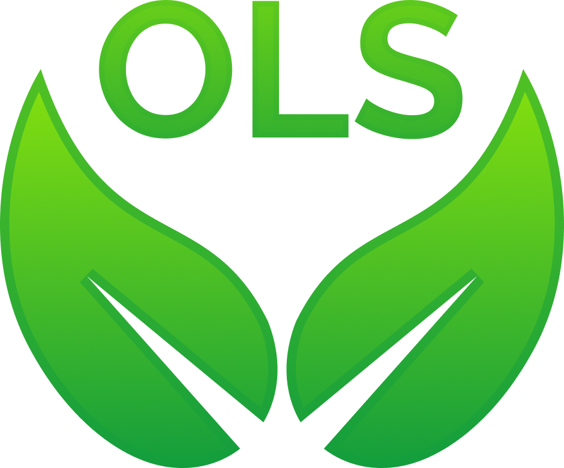
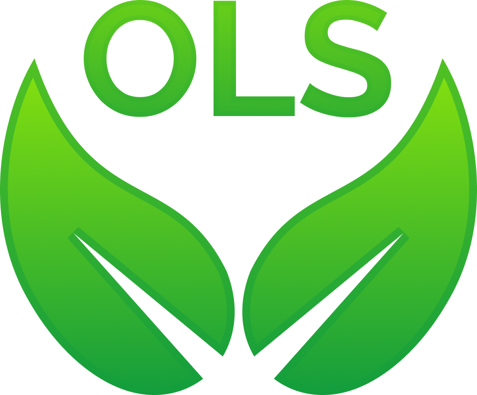

Azam Dashti Khavidaki
A Participatory Researcher, FRQSC and Digital Alliance scholar, and PhD student dedicated to advancing inclusive, art-based methods to amplify the voices of marginalized youth and children. My interdisciplinary research spans topics such as literature and film adaptations, hybrid spaces, social media, child ethics, agency, art-based methods, and cellphilm. Recently, I have enhanced my research methods by integrating AI and data management tools, leveraging digital technologies to support the Sustainable Development Goals (SDGs). Passionate about utilizing Digital Research Infrastructure to foster 21st-century skills and promote equitable research practices. Born and raised in Iran, now based at McGill University in Montreal (Hello!)
About Me
A Participatory Researcher, FRQSC and Digital Alliance scholar, and PhD student dedicated to advancing inclusive, art-based methods to amplify the voices of marginalized youth and children. My interdisciplinary research spans topics such as literature and film adaptations, hybrid spaces, social media, child ethics, agency, art-based methods, and cellphilm. Recently, I have enhanced my research methods by integrating AI and data management tools, leveraging digital technologies to support the Sustainable Development Goals (SDGs). Passionate about utilizing Digital Research Infrastructure to foster 21st-century skills and promote equitable research practices. Born and raised in Iran, now based at McGill University in Montreal (Hello!)
PROJECTS
How can we best empower children to meet the challenges of the 21st century? Global Citizenship Education Development (GCED) and the SustainableDevelopment Goals (SDGs) have become central themes in ethical research with refugee children, focusing onpromoting their agency and empowerment. This feeds into and drives my current PhD research, a continuation ofmy master’s work. Through participatory narrative projects, I engage refugee children as co-researchers inworkshops using tools like iPads for cellphilm, photovoice, artworks, and digital storytelling. This approach aims toempower them as future change-makers by enhancing the skills essential for 21st-century learning, such ascommunication, collaboration, critical thinking, and creativity. These children, having gained refugee experience, willbecome agents of change, promoting sustainable development goals by fostering adaptability, awareness andcompetency.
acknowledgements
The project: "Cultivating 21st Century Skills/DRI for Sustainable Development Goals in Supporting Participatory ResearchInvolving Children with Refugee Experience" was support by OLS mentoring and Digital Alliance of Canada Funding.
 
